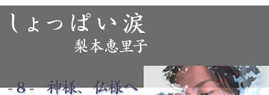

|  | |
| 「南無妙法蓮華経」 みんなが声をそろえ、畳に額をこすりつけながら何かを祈る。私も慌てて頭を下げた。 |
|
|
「南無妙法蓮華経、南無妙法蓮華経……」 大合唱がだんだんつぶやき声になり、やがて祈りの声が聞こえなくなった。 「はい、じゃあ、昼食にしましょうか」 緊迫した雰囲気から一転、周りの人に笑顔が戻る。私もほっとした気持ちになった時、頭上から声がかかった。 「恵里ちゃんはえらいわねぇ。ちゃんとお祈りしてたね。何をお祈りしたの」 大柄の女性、森田先生の顔を見上げた。お父さんやおばあちゃんがハッとしたような顔で私を見つめる。この人に嫌われてはいけない。この人は神様みたいに偉い人なんだ。この人に好かれる人間になりたい。そうしたらきっと幸せに生きていける。 「いっしょうけんめいがんばるから、おばあちゃんとお父さんがげんきでいられますようにって」 森田先生が満足そうな顔でうなづく。おばあちゃんとお父さんも安心したように私を笑顔で見つめる。私は３人に向かって笑顔を返して、もう一度仏様に向かって手を合わせた。 物心ついた時には、森田先生が私の生活で一番偉い人だった。森田先生とおばあちゃんやお父さんがどこで知り合ったのか、森田先生がどういう人なのか、大学生になった今でもわからない。気づいた時には森田先生、そのお弟子さんと一緒に、山梨県にある日蓮宗のお寺に月に一度通っていて、家では毎日朝と晩にお経を読む生活だった。確か小学校に入るぐらいの年齢の時には、普通の家がお葬式で和尚さんに読んでもらうようなお経ぐらいは軽くソラで言えるようになっていた。 家の中のお清めや写経だって日課だし、土日は森田先生に連れられて霊能者と言われる人のところへ挨拶へ言ったり、近くの仏像に手を合わせに行ったり忙しい。 引っ越しや旅行をする時は、車で10分の森田先生の家へ行って許可をとり、親戚の誰かとケンカをしたなんて場合も森田先生に報告をする。 私の勉強だってそうだ。１００点をとったとか、通知表で５をとったとかは関係なかった。私がおみくじを引き、森田先生がそれを見て、「勉強していない」と言われればお父さんから怒られるし、「勉強がんばってるね」と言われれば前日にテストで０点をとっていたってほめられる。 大学から一人暮らしを始めたものの、その生活は変わらなかった。一人暮らしのこの部屋にも神棚があって、大学から帰るとまず手を合わせる。 いつもより早く帰れた日はたくさんお経を読んで、達成できると満足感でいっぱいだった。何だかいいことがある気がする。逆に時間がなくていつもより読むのが少ない日は、不安な気持ちがこみあげてくる。次に森田先生に会った時、怒られるんじゃないか。明日悪いことが起きるんじゃないか。その思いが頭から離れなくて、結局あとで読みなおすことにしている。 世の中みんなそうしているんだと思っていた。特別友達にそういう話をしたことはなかったけれど、みんなお経を読んでいるんだと思っていた。そんな私が初めてお経を読まない生活を見たのは、大学生活２カ月目に友達の朋美の家に泊まりに行った時だった。 「そこ、てきとうに座って」 朋美は自分の部屋に入ってすぐ、ベットにごろんと横になる。私はきょろきょろとあたりを見回して神棚を探したけど、見つからない。 「あのさ……」 なんて言おうか考えていると、朋美が身体を起こして言った。 「洗面所とトイレはあっち」 私はうなづいて、とりあえず手を洗った。洗面所から出て、思いきって朋美に聞く。 「あのさ、お経はいつ読むの？」 「えっ……」 朋美は目を見開いて私の顔を見つめる。私も彼女の反応に驚いて、朋美の顔をまっすぐに見た。 「お経は読まないんだ」 「恵里は読んでるの？」 私がうなづくと、彼女はこらえきれないように吹き出した。お腹をかかえて笑う。しばらく笑ったあと、朋美は目のはしからあふれた涙をぬぐいながら言った。 「恵里のうちって固いんだね〜。普通は読まないでしょ」 「じゃあ、手を合わせたりもしないの？」 朋美が首をかたむける。 「うーん、初詣の時ぐらいかな」 「それで不安になったりしないの」 私の真剣な口調に驚いたように、朋美は顔を引き締めた。 「どうして不安になるの？ 恵里は好きで安心するからお経を読んでいるんじゃないの？」 考えるより、言葉が口をついて出た。 「信じてるの、仏様の存在を。祈れば祈らない人よりもいいことがあるんだって思う。森田先生……その宗教の先生なんだけど、森田先生に付いていけば、幸せになれる気がする」 朋美が私の目をまっすぐに見つめる。 「そうやってビクビクした目で毎日お経を読むことが幸せなの？」 心に何かがあたった気がした。 「幸せになれると思っているから、読んでるの。これを読めば、明日も生きていけるって思うから……」 叫ぶように言って、あとは声にならなかった。涙がぽたぽたとこぼれ落ちていく。背中に朋美の温かい手を感じた。 「ごめん。言いすぎた。私は幸せになりたいとか、幸せだと感じるのって、全部自分の力だと思っているから。その支えに手を合わせるのはいいと思うけどね。でも、うん、いいよ。気がすむなら、ここで読みなよ。私、音楽聴いているから」 私は窓を開けて、空に向かって手を合わせた。何故だか涙が止まらなくて、途中で何度もお経を間違えてしまう。視界のはしに、ヘッドホンをしながら楽しそうに揺れている朋美の背中がうつった。たぶん私はああいう風に何かを身体で表現したことってないんだと思った。 しばらくして実家に帰ると、おばあちゃんとお父さんが口をきかなくなっていた。お父さんが部屋に入るのを見計らって、おばあちゃんが小声で私の耳にささやく。 「もうね、私は森田先生と付き合うのやめたの」 私は驚いておばあちゃんの顔を見た。 「最近、身体がしんどくてね、森田先生の前で笑顔でいられなくなっちゃったの。先生が好む人間でいられなくなっちゃったんだよ……」 「じゃあ、おばあちゃんはもう手を合わせないの」 おばあちゃんが私を見てかすかに笑った。 「恵里子は好きなようにすればいい。手を合わせたいと思ったら、そうすればいいんじゃない」 お茶を一口飲んで、おばあちゃんは遠くを見つめた。 「森田先生と付き合うのを止めるって言ったら、正は怒っちゃってね。でも仕方ないね。森田先生を間にはさんでしか、家族をしてこなかったから」 正とは私の父の名だ。そう、どんな時も私たちの中心には森田先生がいた。森田先生なしで普通にコミュニケーションをとることは、私たちの家族にはもうできないのかもしれない。おばあちゃんはくたびれた顔で、ゴロンと神棚に背を向けて横になった。 おばあちゃんが末期の癌で亡くなったのは、それから一週間後のことだった。 おばあちゃんが危篤だと聞いて、私はパニックになって森田先生の家のドアを叩いた。先生はゆったりとした顔でいつもの部屋に座っている。 「おばあちゃんが危篤なんです。なんとか助ける方法はないんですか」 私の必死の雰囲気を森田先生は簡単に遮る。先生は神棚に手を合わせ、そしてふりむくと静かな目で私を見つめた。 「仕方ないんじゃないでしょうか。あなたのおばあちゃんは私から離れていってしまったから」 その瞬間、私のなかで物心ついてから築いてきたものが、音を立てて崩れ落ちていった。 先生の家を後にして、病院に向かい、冷たくなったおばあちゃんの手を握った。私の涙でおばあちゃんの身体に次々と小さな染みができていく。それを見たら手がぶるぶる震えて、おばあちゃんの身体に向かって手を合わせていた。さよならと感謝を伝えるために。両手がじっとりと濡れる。合わせた手のひらからおばあちゃんへ確かに気持ちが通じた気がした。 あれから５年。私は手を合わせていないし、お経も唱えていない。 お父さんには一度だけ電話でものすごく怒られた。 「誰のおかげで、今まで平和に生きてこれたと思ってるんだ」 きっと平和だったのは、外との空気を完全にシャットアウトしてしまっていたからだと思う。おばあちゃんのお葬式で、森田先生の指示に笑顔で従っていたお父さんは、私にとって遠い人になってしまった。私は悲しい時に悲しいと言って、笑いたい時に笑って、疲れた時に休みたい。そんな当たり前のことが、私たちの家族は森田先生に指示されないとできなかった。お経を唱えないと眠れなかった。 私の今の家には神棚は作っていない。今は神様も仏様も信じていないから、たぶんこれからも作らないと思う。 私が信じているのは、机の上に飾ってある、おばあちゃんの写真だけ。朋美の家で青空に向かってお経を唱えたように、この写真の前でなら泣きたい時に泣ける気がする。私だけの大切な神様、おばあちゃん、今日も見守っててね。小さな声でつぶやいて、胸の中でそっと手を合わせた。 梨本恵里子（なしもと・えりこ） 1978年生まれ。フリーライター |